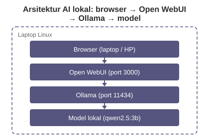
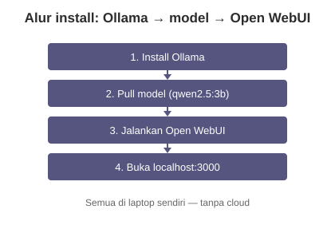

AI Lokal di Linux: Ollama + Open WebUI di Laptop Kentang (CPU Only)
Home > Tutorial > AI Lokal di Linux: Ollama + Open WebUI di Laptop Kentang (CPU Only)
Arsip
- Instal Apache, MySQL, PHP dan phpMyAdmin di Archlinux 2021
- Konfigurasi Virtual Host Apache Server Di ArchLinux 12 Jun 2021
- Cara Deploy Blog Statis ke GitHub Pages 17 Nov 2026
- Cara Daftar make.fun dengan Agent dan Biar Agent Cari Bounty Sendiri 17 Nov 2026
- Cara Berburu Bug Bounty dengan Agentic-Bug-Hunter (Gratis, AI Lokal) 18 Nov 2026
- Cara Pasang Google Analytics 4 dan Tag Manager di Blog Statis 26 Nov 2026
- Cara Optimasi SEO Blog GitHub Pages 26 Nov 2026
- Cara Ikut Bounty make.fun Pakai AI Agent 26 Nov 2026
- Cara Bikin Bot Tank di battle.training 26 Nov 2026
- Cara Bikin USB Bootable Ventoy (Kedetek di HP dan Laptop) 26 Nov 2026
- Rekomendasi Linux ISO Kecil dan Ringan untuk Laptop Lama (Kentang) 28 Nov 2026
- AI Lokal di Linux: Ollama + Open WebUI di Laptop Kentang (CPU Only) 28 Nov 2026
AI lokal berarti model AI-nya berjalan di laptopmu sendiri — bukan di server perusahaan. Ada dua alasan besar kenapa ini menarik: privasi dan hemat biaya.
Privasi: chat, pertanyaan, dan dokumenmu tidak keluar dari laptop — tidak dikirim ke server mana pun, tidak dipakai untuk melatih model orang lain.
Hemat biaya: modelnya open-weight dan gratis, tanpa langganan bulanan — yang kamu butuhkan hanya laptop dan listrik.
Jujur saja: di CPU laptop kentang, model kecil (3B) menjawab lebih lambat dari ChatGPT. Tapi untuk tanya-jawab, meringkas dokumen, dan membantu menulis, kecepatannya sudah cukup. Tutorial ini memakai
Ollama untuk menjalankan modelnya, dan Open WebUI sebagai antarmuka web-nya — tampilannya mirip ChatGPT, tapi berjalan 100% offline di browser.

Gambar 1: Arsitektur AI lokal — browser, Open WebUI, Ollama, dan model, semuanya di laptopmu.
Yang Dibutuhkan
- Laptop Linux — kalau laptopmu tua, pakai distro ringan (lihat tutorial rekomendasi Linux ringan untuk laptop lama).
- RAM 8 GB disarankan kalau mau memakai model 3B (lihat tabel di bawah).
-
Docker, kalau memasang Open WebUI lewat Docker — atau Python pip kalau mau tanpa Docker.
Langkah 1: Install Ollama
Install Ollama dengan satu perintah — installernya memasang Ollama sebagai
systemd service, dan API-nya jalan di 127.0.0.1:11434.
curl -fsSL https://ollama.com/install.sh | sh
Langkah 2: Download dan Jalankan Model
Download model
qwen2.5:3b (sekitar 1,9 GB):
ollama pull qwen2.5:3b
Setelah selesai di-download, jalankan dan mulai chat di terminal:
ollama run qwen2.5:3b
Perintah lain yang berguna:
ollama list
ollama ps
ollama rm <model>
ollama ps
ollama rm <model>
ollama list menampilkan model yang sudah di-download, ollama ps menampilkan model yang sedang berjalan, dan ollama rm <model> menghapus model yang tidak dipakai lagi.
Pilih Model Sesuai RAM
Patokan kasarnya begini — model yang terlalu besar untuk RAM-mu akan lambat atau gagal jalan.
| RAM laptop | Ukuran model | Contoh model |
|---|---|---|
| 2–4 GB | 0.5B–1.5B | qwen2.5:0.5b, llama3.2:1b |
| 8 GB | 3B | qwen2.5:3b (±1,9 GB), llama3.2:3b (±2,0 GB), gemma2:2b |
| 16 GB | 7–8B | qwen2.5:7b, llama3.1:8b, mistral:7b |
Tanpa GPU, model tetap jalan di CPU — hanya lebih lambat. Kecepatannya tergantung RAM dan jumlah core CPU.

Gambar 2: Alur install — Ollama, model, Open WebUI, lalu buka di browser.
Langkah 3: Pasang Open WebUI
Open WebUI adalah antarmuka web untuk Ollama — tampilannya seperti ChatGPT: ada daftar chat di kiri, kolom chat di tengah, dan bisa ganti-ganti model. Kalau Ollama ada di komputer yang sama, jalankan container ini:
docker run -d -p 3000:8080 --add-host=host.docker.internal:host-gateway -v open-webui:/app/backend/data --name open-webui --restart always ghcr.io/open-webui/open-webui:main
Lalu buka
http://localhost:3000 di browser. Saat pertama kali dibuka, kamu diminta membuat akun — akun pertama ini otomatis menjadi admin.
Alternatif tanpa Docker. Kalau tidak mau memakai Docker, install lewat
pip:
pip install open-webui
lalu jalankan:
open-webui serve
Open WebUI akan jalan di
http://localhost:8080.
Alternatif satu container CPU-only. Ada juga image yang sudah berisi Ollama dan Open WebUI sekaligus — cocok untuk CPU-only, tanpa install Ollama terpisah:
docker run -d -p 3000:8080 -v ollama:/root/.ollama -v open-webui:/app/backend/data --name open-webui --restart always ghcr.io/open-webui/open-webui:ollama
Perhatian — Ollama tidak terjangkau dari container: Ollama secara default hanya bind ke
127.0.0.1 — artinya hanya bisa dijangkau dari laptop itu sendiri. Container Docker Open WebUI berjalan di jaringannya sendiri, jadi ia tidak bisa menjangkau Ollama di localhost laptop. Gejalanya: Open WebUI menampilkan "Server Connection Error". Perbaiki dengan mengizinkan Ollama mendengarkan di semua interface — jalankan systemctl edit ollama dan tambahkan baris ini di editor yang terbuka:
[Service]
Environment="OLLAMA_HOST=0.0.0.0:11434"
Environment="OLLAMA_HOST=0.0.0.0:11434"
Simpan, lalu reload dan restart Ollama:
systemctl daemon-reload
systemctl restart ollama
systemctl restart ollama
Perhatian: JANGAN pernah membuka port
11434 langsung ke internet — Ollama tidak punya autentikasi, siapa pun yang menemukan port itu bisa memakai Ollama-mu.
Troubleshooting Singkat
- Model lambat → pakai model yang lebih kecil, atau kecilkan context.
- Open WebUI menampilkan "Server Connection Error" → cek
OLLAMA_HOST (lihat GOTCHA di atas).
Lanjut ke Mana?
Sekarang kamu punya ChatGPT pribadi yang offline. Dua langkah berikutnya: akses AI ini dari HP, dan jadikan ia pencari dokumen pribadimu.
- Mengakses AI Lokal dari HP via Jaringan Lokal & Cloudflare Tunnel
- Membuat Web Pencari Dokumen Pribadi (Local RAG) dengan Open WebUI
Referensi
- https://ollama.com
- https://pypi.org/project/open-webui/
- https://www.codewithanjum.com/run-llm-locally-with-ollama
- https://clinerds.com/article/ollama-local-llm-cheap-vps
Suka tutorial ini? Dukung penulis biar makin banyak tutorial gratis.
Dukung via Saweria